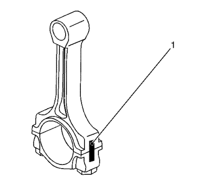
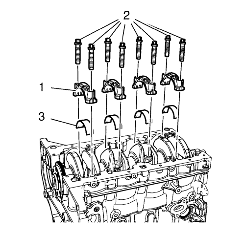
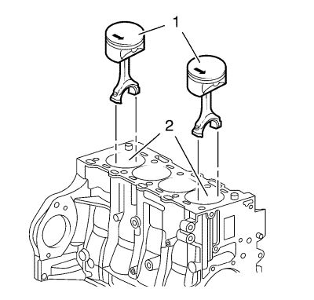
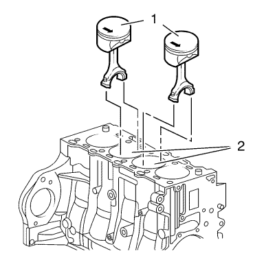
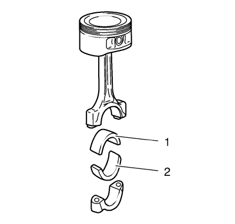
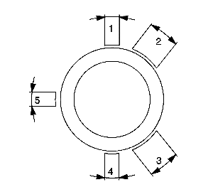
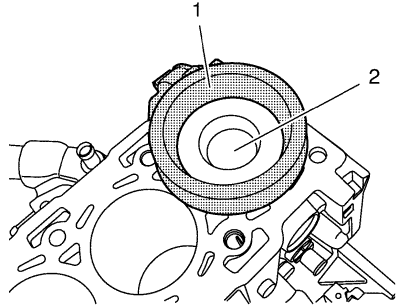

Sustitución de pistón, biela y cojinete
Herramientas especiales
EN-45059 Kit de goniómetro de par de apriete
Si desea informarse sobre herramientas regionales equivalentes. Consulte Herramientas especiales → 1.6L LXT.
Procedimiento de desmontaje
- Abra el capó.
- Retire la culata. Consultar Sustitución de la culata .
- Desmonte el cárter de aceite. Consultar Sustitución del cárter de aceite .
- Elevar el vehículo y soportarlo de manera segura. Consultar Elevación y soporte en alto del vehículo .
- Monte el tornillo de la polea del cigüeñal.
- Ponga los pistones 1 y 4 en el PMS en el sentido de giro del motor.

Nota: Siga la secuencia del cilindro.
- Marque la biela con la cubierta (1) del cojinete de biela.

- Desmonte los 4 tornillos de los sombreretes de cojinete de biela (2) de los cilindros 1 y 4.
- Desmonte los sombreretes de cojinete de biela (1) y el cojinete de biela (3).
- Bajar el vehículo.

- Empuje los pistones 1 y 4 (1) y sáquelos del orificio del cilindro (2).
Nota: Las superficies de corte la biela y la cubierta del cojinete de biela forman un grupo único y no deben dañarse ni intercambiarse. No se apoye en las superficies de corte.
- Desmonte los pistones 1 y 4 (1).
- Gire el cigüeñal en el compensador del cigüeñal 180° en el sentido de giro del motor.
Nota: Siga la secuencia del cilindro.
- Marque la biela con la cubierta (1) del cojinete de biela.
- Elevar el vehículo
- Desmonte los 4 tornillos de los sombreretes de cojinete de biela (2) de los cilindros 2 y 3.
- Desmonte los sombreretes de cojinete de biela (1) y el cojinete de biela (3).
- Bajar el vehículo.

- Empuje los pistones 2 y 3 (1) y sáquelos del orificio del cilindro (2).
Nota: Las superficies de corte la biela y la cubierta del cojinete de biela forman un grupo único y no deben dañarse ni intercambiarse. No se apoye en las superficies de corte.
- Desmonte los pistones 2 y 3 (1).

Nota: Observe la posición de montaje y la alineación correctas.
- Desmonte el cojinete de la biela (1, 2).
- Compruebe los componentes. Consultar Limpieza e inspección de pistones, bielas y cojinetes .
Procedimiento de montaje
Nota: Lubrique el cojinete de la biela con aceite de motor nuevo.
- Monte el cojinete de la biela (1, 2).

- Ajuste las juntas de segmento de pistón.
| • | Segmento superior de compresión del pistón en posición (1). |
| • | Segmento inferior de compresión del pistón en posición (4). |
| • | Segmento provisional de la ranura del segmento rascador de aceite del pistón en la posición (5), segmentos de acero de la ranura del segmento rascador de aceite en la posición (2) o (3). |

- Lubrique los segmentos de pistón, el pistón (1), la superficie del diámetro interior del cilindro y el compresor EN-48249 (2) con aceite de motor limpio.
Nota: La flecha de la cabeza del pistón señala al lado de la distribución del motor; el círculo de la cabeza de biela señala al lado del cambio del motor.
- Empuje los pistones 2 y 3 (1) y métalos en el orificio del cilindro (2).
- Elevar el vehículo
- Monte los sombreretes de cojinete de biela (1) y el cojinete de biela (3).
- Monte los 4 tornillos de sombrerete de cojinete de biela nuevos (2) del cilindro 2 y 3 y apriételos en 3 pasos:
Precaución:Consulte Precaución con las fijaciones en la sección Prólogo.
| 7.1. | En el primer paso, apriételos a 25 N·m (18 lib. pie).. |
| 7.2. | En el segundo paso apriételos a 30° con el goniómetro EN-45059. |
- Gire el cigüeñal en el compensador del cigüeñal 180° en el sentido de giro del motor.
- Bajar el vehículo.
- Empuje los pistones 1 y 4 (1) y métalos en el orificio del cilindro (2).
- Elevar el vehículo
- Monte los sombreretes de cojinete de biela (1) y el cojinete de biela (3).
- Monte los 4 tornillos de sombrerete de cojinete de biela (2) del cilindro 1 y 4 y apriételos en 3 pasos:
| 13.1. | En el primer paso, apriételos a 25 N·m (18 lib. pie).. |
| 13.2. | En el segundo paso apriételos a 30° con el goniómetro EN-45059. |
- Coloque el cigüeñal en el sentido de rotación del motor a 60° antes del punto muerto superior (TDC).
- Desmonte el tornillo de la polea del cigüeñal.
- Montar el cárter de aceite. Consultar Sustitución del cárter de aceite .
- Monte la culata. Consultar Sustitución de la culata .
- Cierre el capó.
| © Copyright Chevrolet. All rights reserved |